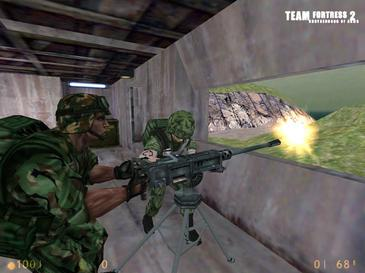
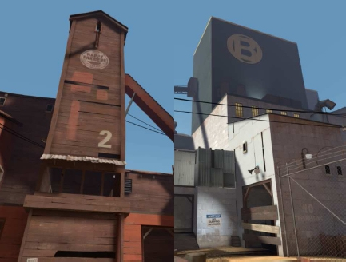
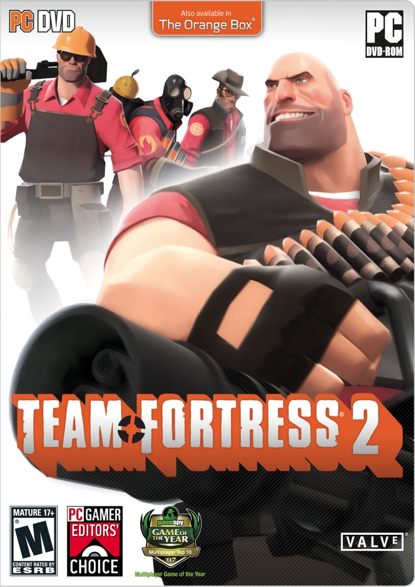

A screenshot of an early version of Team Fortress 2
History
Origins
Team Fortress originally began life as a free mod for Quake. Development on Team Fortress 2 switched to the GoldSrc engine in 1998 after
the development team Team Fortress Software—consisting of Robin Walker and John Cook—were first contracted and finally outright employed by Valve Corporation.
At the point of Team Fortress Software's acquisition production moved up a notch and the game was promoted to a standalone, retail product;to tide fans over,
work began on a simple port of the game which was released in 1999 as the free Team Fortress Classic. Notably, Team Fortress Classic was built entirely
within the publicly available Half-Life Software Development Kit as an example to the community and industry of its flexibility.
Walker and Cook had been heavily influenced by their three-month contractual stint at Valve, and now they were working full-time on their design, which was
undergoing rapid metamorphosis. Team Fortress 2 was to be a modern war game, with a command hierarchy including a commander with a bird's-eye view of the
battlefield, parachute drops over enemy territory, networked voice communication and numerous other innovations.

The almost cartoonlike use of colors. Note the difference in design of the RED base to the left and the BLU base to the right.
Design
Team Fortress 2 does not attempt the realistic graphical approach used in other Valve games on the Source engine such as Half-Life 2, Counter-Strike: Source
and Day of Defeat: Source. Rather, it uses a more stylized, cartoon-like approach "heavily influenced by early 20th century commercial illustrations" and
achieved with extensive use and manipulation of phong shading.[14][64] The development commentary in the game suggests that part of the reason for the
cartoonish style was the difficulty in explaining the maps and characters in realistic terms. The removal of an emphasis on realistic settings allows
these explanations to be sidestepped. The game debuted with the Source engine's new dynamic lighting, shadowing and soft particle technologies,
among many other unannounced features, alongside Half-Life 2: Episode Two. Team Fortress 2 was also the first game to implement the Source engine's
new Facial Animation 3 features.
The art style for the game was inspired by J. C. Leyendecker, as well as Dean Cornwell and Norman Rockwell. Their distinctive styles of strong silhouettes
and shading to draw attention to specific details were adapted in order to make the models distinct, with a focus on making the characters' team, class
and current weapon easily identifiable. Silhouettes and animation are used to make the class of a character apparent even at range, and a color scheme
that draws attention to the chest area brings focus to the selected weapon. The voices selected for each of the classes were based on imagining what
people from the 1960s would expect the classes to have sounded like, according to writer Chet Faliszek.
The map design has a strong evil genius theme with archetypical spy fortresses, concealed within inconspicuous buildings such as industrial warehouses
and farms to give plausibility to their close proximities; these bases are usually separated by a neutrally-themed space. The bases hide exaggerated
super weapons such as laser cannons, nuclear warheads, and missile launch facilities, taking the role of objectives. The maps have little visual clutter
and stylized, almost impressionistic modeling, to allow enemies to be spotted more easily. The impressionistic design approach also affects textures,
which are based on photos that are filtered and improved by hand, giving them a tactile quality and giving Team Fortress 2 its distinct look. The bases
are designed to let players immediately know where they are. RED bases use warm colors, natural materials and angular shapes, while BLU bases use cool
colors, industrial materials and orthogonal shapes.

The boxart of the retail version of Team Fortress 2
Release
During the July 2006 Electronic Arts press conference, Valve revealed that Team Fortress 2 would ship as the multiplayer component of The Orange Box.
A conference trailer showcasing all nine of the classes demonstrated for the first time the game's whimsical new visual style. Managing director of Valve
Gabe Newell said that the company's goal was to create "the best looking and best-playing class-based multiplayer game".[13] A beta release of the entire
game was made on Steam on September 17, 2007 for customers who had pre-purchased The Orange Box, who had activated their Black Box coupon, which was included
with the ATI HD 2900XT Graphics cards, and for members of the Valve Cyber Café Program. The beta continued until the game's final release.
The game was released on October 10, 2007, both as a standalone product via Steam and at retail stores as part of The Orange Box compilation pack, priced
at each gaming platform's recommended retail price. The Orange Box also contains Half-Life 2, Half-Life 2: Episode One, Half-Life 2: Episode Two, and
Portal. Valve offered The Orange Box at a ten percent discount for those who pre-purchased it via Steam before the October 10, as well as the
opportunity to participate in the beta test.